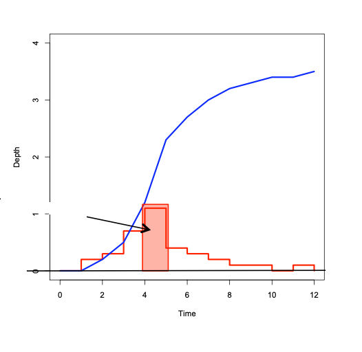
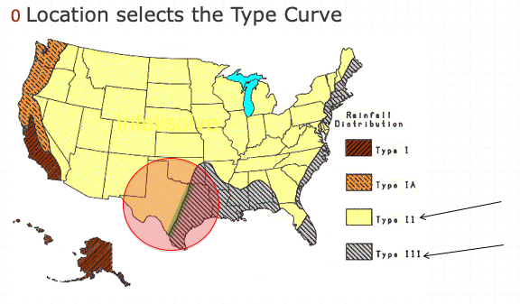
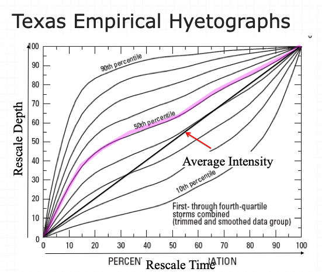

2. Precipitation, Hyetographs, Design Storms#
Course Website
Readings#
Gupta, R.S., 2017. Hydrology and Hydraulic Systems, pp. 46-59
Chow, V.T., Maidment,D.M., and Mays, L.W. (1998) Applied Hydrology, McGraw Hill, pp. 444-493
McCabe, K. (2022) “Rain, sleet or snow?” Royal Meterological Society
Areal-Reduction Factors for the Precipitation of the 1-Day Design Storm in Texas USGS WRI 99-4267
Videos#
How do we get Rain, Hail, Freezing Rain, Sleet & Snow? (YouTube)
Rainfall Statistics, Intensity-Duration-Frequency (IDF) Curves - Part 1
Rainfall Statistics, How to Interpret Intensity-Duration-Frequency (IDF) Curves - Part 2
Dimensionless Hyetograph for Design Storm Modeling (YouTube Animation)
Areal extent of rainfall/how to measure rainfall/rainfall radar/rainfall measurement
Precipitation Description#
Precipitation is the water which falls from the atmosphere in either liquid or solid form. It results from the condensation of moisture in the atmosphere due to cooling of a parcel of air. The most common cause of cooling is dynamic or adiabatic lifting of the air. Adiabatic lifting means that a given parcel of air is caused to rise with resultant cooling and possible condensation into very small cloud droplets. If these droplets coalesce and be- come of sufficient size to overcome the air resistance, precipitation in some form results.
Surface water hydrology really begins before the precipitate hits the ground. The form of precipitate is important (rain, sleet, hail, or snow). For example it takes about 10 inches of snow to produce the same water as 1 inch of rain. Other factors of importance are the size of the area over which the precipitation falls, the intensity of the precipitation, and its duration.

Once the precipitation hits the ground several things can happen. It can evaporate immediately, especially if the surface is hot, and relatively impervious. If the surface is dry and/or porous, the precipitate may infiltrate into the ground or may just wet the surface. The process of just wetting leaves and blades of grass is called interception. Some of the infiltrated water is returned to the atmosphere by transpiration by plants. Collectively the return to the atmosphere is called evapotranspiration. The precipitate may be trapped in small depressions (puddles). It may remain in these puddles until it evaporates or until the depressions fill and overflow. Finally it may run off directly to the nearest stream or lake to become surface water. The four “processes” (evapotranspiration, infiltration, interception, and depression storage) that reduce the amount of precipitation available for direct runoff are collectively called abstractions. In drainage engineering, the loss model is how we account for these processes.
Forms of Precipitation#
Precipitation occurs in various forms. Rain is precipitation that is in the liquid state when it reaches the earth.

Snow is frozen water in a crystalline state, while hail is frozen water in a ‘massive’ state.

Sleet is melted snow which is an intermixture of rain and snow. Of course, precipitation that falls to earth in the frozen state cannot become part of the runoff process until thawing and melting occur. Much of the precipitation that falls in mountainous areas and in the northerly latitudes falls in frozen form and is stored as snowpack or ice until warmer temperatures prevail.
Types of Precipitation (by Origin)#
Precipitation can be classified by the origin of the lifting motion which causes the preci pi ta ti on. Each type is characterized by different spatial and temporal rainfall regimens. There are three major types of storms which can be classified as follows:
Convective Storms. Convective storms are atmospheric disturbances characterized by strong upward movement of air. They occur when warm, moist air rises, cools, and condenses, forming clouds and often leading to precipitation.
Orographic Storms. Orographic storms, also known as orographic precipitation or orographic lifting, occur when air is forced to rise over elevated terrain, such as mountains or hills. As the air moves upward, it cools and condenses, leading to cloud formation and precipitation.
Cyclonic Storms. Cyclonic storms, also known as cyclones or hurricanes (depending on the region), are powerful low-pressure systems characterized by rotating winds and organized thunderstorms. These storms typically form over warm ocean waters, where moist air rises and creates an area of low pressure. As the warm air rises, it cools and condenses, forming clouds and releasing heat energy that fuels the storm’s development.
Convective Storms#
Precipitation from convective storms results as warm moist air rises from lower elevations into cooler overlying air as shown below.
The characteristic form of convective precipitation is the summer thunderstorm. The surface of the earth is warmed considerably by mid-to late afternoon of a summer day, the surface imparting its heat to the adjacent air. The warmed air begins rising through the overlying air, and if proper moisture content conditions are met (condensation level), large quantities of moisture will be condensed from the rapidly rising, rapidly cooling air. The rapid condensation may often result in huge quantities of rain from a single thunderstorm spawned by convective action, and very large rainfall rates are quite common beneath slowly moving thunderstorms.
Orographic Storms#
Orographic precipitation results as air is forced to rise over a fixed position geographic feature such as a range of mountains. The characteristic precipitation patterns of the Pacific coastal states are the result of significant orographic influences. Mountain slopes that face the wind (windward) are much wetter than the opposite (leeward) slopes. In the Cascade Range in Washington and Oregon, the west-facing slopes may receive upwards of 100 inches (254 cm) of precipitation annually, while the east facing slopes, only a few miles away over the crest of the mountains, receive on the order of 20 inches (51 an) of precipitation annually.

Cyclonic Storms#
Cyclonic precipitation is caused by the rising or lifting of air as it converges on an area of low pressure. Air moves from areas of higher pressure toward areas of lower pressure. In the middle latitudes, cyclonic storms generally move from west to east and have both cold and warm air associated with them. These mid-latitude cyclones are sometimes called extra-tropical cyclones or continental storms. Continental storms occur at the boundaries of air of significantly different temperatures. A disturbance in the boundary between the two air parcels can grow, appearing as a wave as it travels from west to east along the boundary. Generally, on a weather map, the cyclonic storm will appear as shown in below with two boundaries or fronts developed.

One has warm air being pushed into an area of cool air, while the other has cool air pushed into an area of warmer air. This type of air movement is called a front; where warm air is the aggressor it is a warm front, and where cold air is the aggressor it is a cold front. The precipitation associated with a cold front is usually heavy and covers a relatively small area, whereas the precipitation associated with a warm front is more passive, smaller in quantity, but covers a much larger area, as pictured below.

Tornadoes and other violent weather phenomena are associated with cold fronts.
2.1 Precipitation Characteristics#
There are several variables of interest:
Intensity: how hard it rains (a rate)
Duration: how long it rains at any given intensity (a time)
Frequency: how often it rains at any given intensity and duration (a probability)
Spatial Distribution: the rainfall depth over an area (a surface/volume)
Temporal Distribution: the time series of rainfall depth over an area (or point). The point feature is called a hyetograph.
Rainfall probabilities are expressed as a combination of frequency (probability), depth, and duration. The inclusion of depth and duration reflects that different “storms” can produce the same total depth, but deliver that depth over much different times
Note
A slow gentle rain for a long time versus a hard rain for a short time can have the same total depth, but vastly different hydrologic impact
Depth-Duration-Frequency#
Depth of rainfall is the accumulated depth (in a gage) over some time interval.
Duration is that time interval.
Frequency is the probability (like AEP) of observing the depth over the given duration.

An alternate to DDF is to present the magnitude as an intensity (a rate). The intensity is the ratio of an accumulated depth to some averaging time, usually the duration.
where \(D\) is the depth, and \(T_C\) is the averaging time
Note
Intensity is NOT the instantaneous rainfall rate.
The symbol \(T_C\) represents the time of concentration for a watershed, if the averaging time happens to coincide with the time needed for water to flow from the most remote point in a watershed to the watershed outlet; otherwise its just an arbitrary averaging time.
Intensity is related to depth and duration.

The intensity is the ratio of depth to a particular duration. For example, if the duration or averaging time is 12 hours and the accumulated depth for 12 hours is 70 mm (about 3 inches), then the average rate is 70mm/12hours = 5.8 mm/hour. This average rate, if applied over 12 hours will produce the depth of 70mm.
Conversion from Depth-Duration to Intensity-Duration is obtained by the ratio of depth to duration
Conversion from Intensity-Duration to Depth-Duration is obtained by multiplication
Intensity-Duration-Frequency#
The family of curves that depicts the relationship between the intensity, duration, and frequency of precipitation at a point is a fundamental part of the rational equation method for storm water drainage design.
Conversion from Depth-Duration to Intensity-Duration is obtained by the ratio of depth to duration
Conversion from Intensity-Duration to Depth-Duration is obtained by multiplication
2.2 Precipitation Measurement Techniques#
Understanding how precipitation is measured is essential for interpreting rainfall data and constructing accurate hyetographs. This section introduces several common measurement techniques used in hydrology, from manual gauges to radar-based systems.
Total Depth Gauges: The simplest form of precipitation measurement involves collecting rainfall over a period of time and measuring the accumulated depth.
Standard Rain Gauge: A cylindrical container with a known cross-sectional area, typically read manually after a storm or at set intervals. It gives total rainfall depth over the collection period. NWS Standard Rain Gage
Storage (Non-Recording) Gauges: Similar in function, but used in remote areas for later retrieval. Measurement resolution is limited, and event timing is lost.
Photograph (infographic) of a total catch gage.

Recording Gauges: These devices not only measure the amount of precipitation but also record the time history of rainfall events.
Tipping Bucket Rain Gauge: Consists of two small buckets balanced on a pivot. Each tip (often 0.2 mm or 0.01 in) represents a fixed volume of rainfall. As water fills one bucket, it tips when full, emptying and triggering a switch that logs the time. Useful for generating high-resolution time-series data.
Schematic diagram of a tipping bucket rain gauge showing tipping mechanism.
Warning
Tipping bucket gauges tend to underestimate rainfall during high-intensity events due to mechanical lag and loss during tip transitions.
Weighing Gauges: Accumulate rainfall in a container placed on a scale or load cell. Continuously record the weight, which is converted to depth. High precision and excellent performance during mixed precipitation (rain + snow).
Schematic diagram of a weighing rain gauge showing weighing mechanism (spring scale). More modern implementations replace the scale with a load cell, and the recording mechanism would be a digital device (like a Raspberry Pi, with a RTC hat)

Optical and Acoustic Sensors: Newer designs detect raindrop size and velocity using laser or acoustic signals. Primarily used in research or specialized field deployments.
Dataloggers and Telemetry: Most modern recording gauges are connected to dataloggers, which:
Store timestamped measurements (tipping counts, weight readings, etc.).
Can interface with telemetry systems for real-time data transmission.
Allow long-term unattended monitoring.
Best Practices:
Ensure power reliability (solar panels often used).
Calibrate sensors regularly.
Protect against debris and insects in the funnel.
Example layout of a tipping bucket with datalogger and telemetry system.
Radar-Based Rainfall Measurement
Weather radar offers spatially distributed rainfall estimates across entire regions, a powerful supplement to point-based gauges.
Radar sends microwave pulses and measures return signals reflected from raindrops.
The intensity of return signals is related to rainfall rate using empirically derived relationships (e.g., Z-R relationships:
Z is radar reflectivity (mm⁶/m³)
R is rainfall rate (mm/hr)
a, b are empirical coefficients, often set to:
Stratiform rain: \( a = 200, b = 1.6 \)
Convective rain: \( a = 300, b = 1.4 \)
Provides data over large areas at high temporal resolution (5–15 min typical).
Pros: Excellent spatial coverage.
Captures storm structure and movement.
Cons: Subject to errors from beam overshooting, attenuation, ground clutter.
Requires calibration with ground gauges for accurate quantitative use.
Sample radar image showing rainfall intensity over a watershed.
Choosing a Measurement Technique
Technique |
Resolution |
Cost |
Maintenance |
Best Use Case |
|---|---|---|---|---|
Total Depth Gauge |
Low |
Low |
Low |
Basic field stations |
Tipping Bucket |
High |
Moderate |
Moderate |
Urban/stormwater studies |
Weighing Gauge |
Very High |
High |
High |
Snowfall, research |
Radar |
Variable (1 km² pixels) |
Very High |
Institutional |
Regional storm analysis |
Summary
Accurate precipitation measurement is foundational in hydrology. The choice of instrument depends on the desired resolution, site conditions, and budget. Point measurements from gauges offer high fidelity at specific locations, while radar adds spatial context. Dataloggers and telemetry enhance the usability of both by enabling real-time monitoring and data archiving.
In the next section, we will explore how to use precipitation data from these techniques to construct hyetographs, which visually represent rainfall intensity over time.
2.3 Hyetographs#
A hyetograph is a graphical representation of precipitation intensity over time, typically used in hydrologic analysis to understand how rainfall is distributed during a storm event. It plays a central role in watershed modeling, stormwater design, and flood forecasting.
Unlike a total rainfall value—which tells you how much precipitation occurred—a hyetograph shows when and how fast the rain fell. This temporal distribution is critical, especially for runoff and peak discharge estimations.
Two ways of representing the precipitation time series are common: cumulative and incremental precipitation
Type |
Description |
Example Use |
|---|---|---|
Cumulative Precipitation |
Total rainfall measured from the start of the storm up to each time point |
Used to understand total event depth and plot rainfall accumulation |
Incremental Precipitation |
Rainfall depth that occurred in each discrete time interval (e.g., 5 min, 15 min) |
Used in hyetographs to estimate intensity and design runoff hydrographs |
Tip
Cumulative is like an odometer: always increasing (or flat when no rain).
Incremental is like a speedometer: it spikes when rain is falling and drops to zero during dry periods.
Why are hyetographs used?#
To determine peak rainfall intensities needed for design storms.
To input time-varying rainfall into simulation models like HEC-HMS or SWMM.
To evaluate system response under various rainfall scenarios (uniform, front-loaded, back-loaded).
Discrete Data Analysis
The Figure below is a representation of some continuous process. To extract values by measurements only occurs at discrete points in time. These samples are reconstructed in a variety of ways to restore the original representation.

Real data are always some kind of discrete sample
The “pulse” type is typical – and is called incremental data.
For instance, incremental rainfall would be the catch over some time interval (\(\Delta t\) in the figure)
An alternative way to represent the data is with a cumulative representation (which is the running sum of the incremental data)
The Figure below depicts the relationship between incremental and cumulative representations. Each “block” represents the amount of rainfall for the time interval
The collection of blocks is called “incremental” rainfall (red)
The running sum of the blocks is the cumulative distribution (blue)
A particular block is indicated with a height of about one, and time duration also one. If for instance the block represents a depth the implication is that after one hour (from time 4 to 5 in the drawing) the depth added to some location is one unit.

If these are watershed inches, then the drawing sugests that from hour zero to one, zero inches of precipitation occur, from hour one to two, about 1/4 inch; from hour 2 to 3, about 0.4 inch; from hour 3 to 4, about 0.7 inch; and hour 4 to 5; 1 inch; and so on. If we tabulated the information we would have
Time |
Incremental Depth (Red) |
Accumulated Depth (Blue) |
|---|---|---|
0 |
0.00 |
0.00 |
1 |
0.25 |
0.00 |
2 |
0.40 |
0.25 |
3 |
0.70 |
0.65 |
4 |
1.00 |
1.35 |
5 |
0.50 |
2.35 |
Accumulating (running sum) the incremental is called “aggregation” (or just plain numerical integration); Differencing the cumulative is called “disaggregation.” For practical application its often handy to zero pad the leading and trailing edges so don’t have to worry about forward/backward differencing issues.
Computational Thinking (ENGR-1330) - Accumulation
Consider the need to accumulate data such as:
Time (hours) |
Incremental Depth (inches) |
Accumulated Depth (inches) |
|---|---|---|
0 |
0.121 |
|
1 |
0.121 |
|
2 |
0.132 |
|
3 |
0.154 |
|
4 |
0.165 |
|
5 |
0.187 |
|
6 |
0.198 |
|
7 |
0.242 |
|
8 |
0.297 |
|
9 |
0.374 |
|
10 |
0.594 |
|
11 |
4.708 |
|
12 |
1.199 |
|
13 |
0.528 |
|
14 |
0.374 |
|
15 |
0.286 |
|
16 |
0.253 |
|
17 |
0.209 |
|
18 |
0.176 |
|
19 |
0.154 |
|
20 |
0.132 |
|
21 |
0.132 |
|
22 |
0.132 |
|
23 |
0.132 |
|
24 |
0.000 |
Our goal is to complete the last column, in this case its relatively straight forward because the time spacing is uniform. The approach is to perform numerical integration using rectangular panels looking backward in time.
Precipitation Data Analysis Template#
This notebook demonstrates a typical workflow to analyze and visualize precipitation data using Python, and export the results to Excel with an embedded chart. It serves both educational and administrative needs by producing:
A plot for visualization.
A .xlsx file suitable for submission or archival, containing an embedded chart.
# Define precipitation time series (replace as needed)
time = list(range(25))
increment = [0.121, 0.121, 0.132, 0.154, 0.165, 0.187, 0.198, 0.242, 0.297,
0.374, 0.594, 4.708, 1.199, 0.528, 0.374, 0.286, 0.253, 0.209,
0.176, 0.154, 0.132, 0.132, 0.132, 0.132, 0]
# Compute accumulated precipitation
accumulate = [0 for _ in range(len(time))]
for i in range(1, len(time)):
accumulate[i] = accumulate[i-1] + increment[i-1]
import matplotlib.pyplot as plt
plt.figure(figsize=(10, 5))
plt.plot(time, increment, c='red', drawstyle='steps-post', label='Incremental Depth')
plt.plot(time, accumulate, c='blue', drawstyle='steps-post', label='Accumulated Depth')
plt.xlabel('Time (hours)')
plt.ylabel('Depth (inches)')
plt.title('Precipitation for Somewhere USA')
plt.legend()
plt.grid(True)
plt.tight_layout()
plt.show()
import pandas as pd
from openpyxl import Workbook
from openpyxl.chart import LineChart, Reference
from openpyxl.utils.dataframe import dataframe_to_rows
# Create DataFrame
df = pd.DataFrame({
"Time (hr)": time,
"Incremental Depth (in)": increment,
"Accumulated Depth (in)": accumulate
})
# Write to Excel
from openpyxl import Workbook
wb = Workbook()
ws = wb.active
ws.title = "Precipitation Data"
# Write rows
for r in dataframe_to_rows(df, index=False, header=True):
ws.append(r)
# Add chart
chart = LineChart()
chart.title = "Precipitation for Somewhere USA"
chart.style = 13
chart.y_axis.title = 'Depth (inches)'
chart.x_axis.title = 'Time (hours)'
data = Reference(ws, min_col=2, min_row=1, max_col=3, max_row=len(df)+1)
cats = Reference(ws, min_col=1, min_row=2, max_row=len(df)+1)
chart.add_data(data, titles_from_data=True)
chart.set_categories(cats)
ws.add_chart(chart, "E5")
# Save file
excel_output_path = "precipitation_output.xlsx"
wb.save(excel_output_path)
print(f"Excel file saved as: {excel_output_path}")
Excel file saved as: precipitation_output.xlsx
Here is a screen capture of the excel file; it has some modifications to the headers they are bold, and the default line type is changed. Otherwise it is exactly what comes out of the script.
Tip
The image below is also a link to the source sheet, so if you click on the image it should attempt to download the source XLSX file :::
When the time spacing is non-uniform, the numerical integration using rectangular panels looking backward in time is complicated by the various time increments. The listing below is a FORTRAN script to process such situations it should be relatively easy to port the script to python, fix the file reading structure and then have a pretty general tool.
c program to interpolate rain and runoff data into one minute increments
program interpolate
parameter(maxrow=10000)
implicit real*8 (a-h,o-z)
dimension etime(maxrow)
dimension acc_wtd_value(maxrow)
character*255 content
c
c read data file
c
itdata=0
do 2001 irain=1,maxrow,1
read(unit=*,fmt='(a)',end=2002)content
if(content(1:1) .eq. '#' .or.
1 content(2:2) .eq. '#' .or.
3 content(3:3) .eq. '#' )then
write(*,9001)content(1:80)
else
c
c should be datastream here use a formatted read
c
itdata=itdata+1
read(content,*)etime(itdata),acc_wtd_value(itdata)
end if
2001 continue
write(*,*)'end of file -- reset array sizes'
go to 666
2002 continue
c
c end of file read
c
c
c now interpolate, use real values loop indices
c
do 3001 idx=2,itdata
slope=acc_wtd_value(idx)-acc_wtd_value(idx-1)
slope=slope/(etime(idx)-etime(idx-1))
do 3002 rtime=etime(idx-1),etime(idx)-1.0,1.0
value=acc_wtd_value(idx-1)+slope*(rtime-etime(idx-1))
write(*,9002)rtime,value
3002 continue
3001 continue
666 stop
9001 format(a80)
9002 format(2(g12.6,2x))
end
Python
Below is a python script ported (automatically translated into python) to manage the non-uniform in time entries.
# Python port of FORTRAN program to interpolate rain/runoff data to 1-minute intervals
def interpolate_rainfall(input_lines):
etime = []
acc_wtd_value = []
# Read and parse data
for line in input_lines:
line = line.strip()
if line.startswith("#") or len(line.strip()) == 0:
continue
parts = line.split()
if len(parts) == 2:
etime.append(float(parts[0]))
acc_wtd_value.append(float(parts[1]))
# Round time to nearest whole minute
for i in range(1, len(etime)):
etime[i]=round(etime[i],0) # round to nearest whole number as float
# Interpolate values
interpolated = []
for i in range(1, len(etime)):
t0, t1 = etime[i - 1], etime[i]
v0, v1 = acc_wtd_value[i - 1], acc_wtd_value[i]
slope = (v1 - v0) / (t1 - t0)
rtime = t0
while rtime < t1:
value = v0 + slope * (rtime - t0)
interpolated.append((round(rtime, 6), round(value, 6)))
rtime += 1.0
return interpolated
if __name__ == "__main__":
# Example input: could be replaced with reading from a file
sample_data = """# Time Depth
0.0 0.00
3.9 1.20
7.0 2.40
10.0 3.00
11.0 3.00
"""
# Remember to pad the data so last line is one minute more that actual last line of data
lines = sample_data.strip().split("\n")
results = interpolate_rainfall(lines)
import pandas as pd
df = pd.DataFrame(results, columns=["Time (min)", "Interpolated Value"])
df.to_csv("interpolated_output.csv", index=False)
print("Saved interpolated data to interpolated_output.csv")
print(df)
Saved interpolated data to interpolated_output.csv
Time (min) Interpolated Value
0 0.0 0.0
1 1.0 0.3
2 2.0 0.6
3 3.0 0.9
4 4.0 1.2
5 5.0 1.6
6 6.0 2.0
7 7.0 2.4
8 8.0 2.6
9 9.0 2.8
10 10.0 3.0
From Point Hyetographs to Precipitation Fields#
So far, we’ve focused on hyetographs as point-based time series, showing how rainfall accumulates or varies with time at a single location. These are valuable for site-specific design (e.g., a gaged watershed outlet), but hydrologic modeling often requires a more comprehensive view.
To move beyond a single point, we can consider rainfall as a spatiotemporal field. In this framework:
\(X\) and \(Y\) represent geographic coordinates (e.g., latitude and longitude).
\(Z\) represents either:
Incremental rainfall depth (e.g., mm/hr or in/hr), or
Cumulative rainfall depth at each time step.
This transforms the hyetograph from a 2D plot into a surface or sequence of surfaces over a region—effectively a 3D structure evolving through time.
A Conceptual Visualization#
Imagine placing a rain gauge at every pixel of a grid overlaying a watershed. Each pixel produces a hyetograph. We can then stack these hyetographs spatially to generate a rainfall surface for each time step. These surfaces change in height (Z) as rain moves through the region—revealing storm structure, movement, and intensity.
Let’s create a synthetic example: a rainfall event passing over a grid of 10x10 locations with peak intensity centered spatially and temporally.
This 3D plot represents a rainfall surface at a single time step. The spatial center receives the highest intensity (Z-axis), while outer regions receive less. Such surfaces change with time, forming a dynamic spatiotemporal hyetograph field.
Radar-Derived Rainfall Fields (e.g., NEXRAD)#
When gauges are sparse or spatial resolution is essential, hydrologists rely on radar-estimated precipitation to construct rainfall fields. The most widely used system in the U.S. is NEXRAD (Next-Generation Radar), operated by the National Weather Service.
Z–R Relationship#
Radar does not measure rainfall directly—it measures reflectivity (Z), which is related to the drop size and concentration of raindrops. To estimate rainfall rate (R), a power-law relationship is applied:
Z is radar reflectivity (mm⁶/m³)
R is rainfall rate (mm/hr)
a, b are empirical coefficients, often set to:
Stratiform rain: ( a = 200, b = 1.6 )
Convective rain: ( a = 300, b = 1.4 )
Data Format and Resolution#
NEXRAD products (e.g., Stage IV, MRMS) provide:
Gridded rainfall fields at resolutions of:
~1 km² spatial grid
5-minute to 1-hour temporal updates
Formats include NetCDF, GRIB2, HDF, and GIS-ready rasters (GeoTIFF, ASCII Grid)
These datasets allow us to construct spatially distributed hyetographs, where each grid cell has its own time series—ideal for input into distributed models like HEC-HMS (gridded mode), SWAT, or custom Python/R scripts.
Example Use Case#
Imagine a 20 km × 20 km watershed with 1 km² cells:
NEXRAD provides a 25 × 25 matrix of rainfall intensity every 5 minutes.
Each cell can be converted into a hyetograph.
These can then be interpolated across the watershed and used to drive runoff models.
Note: Radar data often requires quality control (e.g., correcting for beam blockage, range degradation, and bright band contamination). Merging with gauge data (gauge-adjusted radar) improves reliability.
 A figure illustrating the Z–R relationship:
A figure illustrating the Z–R relationship:
The left panel shows simulated radar reflectivity (Z), with higher values near the center.
The right panel shows the corresponding estimated rainfall intensity (R) using the Z = a·R^b conversion.
A time series of these rasters plays the same role in spatially distributed precipitation, as our point estimates for different cases. Of course the data volume is greatly increased and beyond what we can reasonably manage with Excel.
Data Sources#
NOAA NCEI Radar Archive: https://www.ncei.noaa.gov/products/radar-data
Iowa Environmental Mesonet (IEM): https://mesonet.agron.iastate.edu/
NOAA MRMS Portal: https://vlab.noaa.gov/web/wdtd/mrms
2.4 Design Storms#
A design storm is a theoretical or hypothetical weather event used by engineers, urban planners, and hydrologists as a standard to simulate and predict the potential impact of extreme weather conditions on a particular area. It is employed in the design and planning of various structures and systems to ensure they can withstand or manage the expected stresses caused by intense rainfall or other weather-related factors.
Design Storm Characteristics#
The characteristics of a design storm typically include:
Intensity: The rate of rainfall or snowfall during the storm, often measured in inches per hour or millimeters per hour.
Duration: The period over which the intense rainfall or weather event persists, often measured in hours.
Frequency: Often associated with a particular return period (e.g., 10-year storm, 50-year storm, 100-year storm), representing the average time interval between occurrences of storms of similar magnitude.
For instance, a 100-year design storm doesn’t mean it occurs once every century; rather, it indicates that there’s a 1% chance of this intensity of storm happening in any given year.
Design storms are used in various engineering and urban planning scenarios, such as:
Hydraulic Design: Designing stormwater drainage systems, sewers, culverts, and other structures to handle anticipated water flow during extreme weather events.
Floodplain Management: Assessing the potential impact of flooding and creating regulations for construction in flood-prone areas.
Infrastructure Design: Designing bridges, dams, and other structures to withstand the forces exerted by extreme weather conditions.
These storms are not exact events that have occurred in the past; rather, they’re created based on statistical analyses of historical weather data to provide a standard for planning and design purposes. They assist in creating structures and systems that can manage the potential stress of extreme weather events, ensuring safety and functionality within the built environment.
Design storms are statistical models of such temporal behavior and are used in hydrologic models when hydrographs need to be generated
Rainfall Distributions#
Rainfall distributions represent temporal patterns of a storm.
A rainfall distribution is also called a hyetograph.
Rainfall distributions are used when we need to estimate an entire hydrograph.
Design Distributions#
Distributions from historical storms are analyzed to generate statistical models of rainfall – these models are called design storms. Design storm distributions are typically represented as dimensionless hyetographs
Some often used models are:
NRCS Type Storms (24 hour, 6 hour)
Empirical Texas Hyetographs (TxHYETO-2015)
NRCS (SCS) Rainfall Type Curves#
SCS(1973) analyzed DDF curves to develop dimensionless rainfall temporal patterns called type curves for four different regions in the US. SCS type curves are in the form of percentage mass (cumulative) curves based on 24-hr rainfall of the desired frequency. Intended for use with the SCS Curve Number runoff generation model!
Location selects the type curve

The 24-hour precipitation depth of desired frequency is specified (NOAA Atlas 14), then the SCS type curve is rescaled (multiplied by the known number) to get the time distribution.

A tabular representation is

A simple script to dimensionalize is listed below (along with the plotting script)
# SCS Type Curves
hour = [0,2,4,6,7,8,8.5,9,9.5,9.75,10,10.5,11,11.5,11.75,12,12.5,13.0,13.6,14,16,20,24]
type1 = [0,0.035,0.076,0.125,0.156,0.194,0.219,0.254,0.303,0.362,0.515,0.583,0.624,0.654,0.669,0.682,0.706,0.727,0.748,0.767,0.83,0.926,1]
type1A = [0,0.05,0.116,0.206,0.268,0.425,0.48,0.52,0.55,0.564,0.577,0.601,0.624,0.645,0.655,0.664,0.683,0.701,0.719,0.736,0.8,0.906,1]
type2 = [0,0.022,0.048,0.08,0.098,0.12,0.133,0.147,0.163,0.172,0.181,0.204,0.235,0.283,0.357,0.663,0.735,0.772,0.799,0.82,0.88,0.952,1]
type3 = [0,0.02,0.043,0.072,0.089,0.115,0.13,0.148,0.167,0.178,0.189,0.216,0.25,0.298,0.339,0.5,0.702,0.751,0.785,0.811,0.886,0.957,1]
t24 =[]
for i in range(len(hour)):
t24.append(hour[i]/24.0)
# dimensionalize
Ptotal = 7.0
T1D =[0 for i in range(len(hour))]
T1AD =[0 for i in range(len(hour))]
T2D =[0 for i in range(len(hour))]
T3D =[0 for i in range(len(hour))]
for i in range(len(hour)):
T1D[i]=Ptotal*type1[i]
T1AD[i]=Ptotal*type1A[i]
T2D[i]=Ptotal*type2[i]
T3D[i]=Ptotal*type3[i]
#plot
import matplotlib.pyplot as plt # the python plotting library
plottitle ='SCS Rainfall Type Curves for Total Depth =' + str(Ptotal) +' inches'
mydata = plt.figure(figsize = (10,5)) # build a square drawing canvass from figure class
plt.plot(hour, T1D, c='blue') # step plot
plt.plot(hour, T1AD, c='cyan') # step plot
plt.plot(hour, T2D, c='orange') # step plot
plt.plot(hour, T3D, c='red') # step plot
#plt.plot(time, accumulate, c='blue',drawstyle='steps') # step plot
plt.xlabel('Time (hours)')
plt.ylabel('Depth (inches)')
plt.legend(['Type 1','Type 1A','Type 2','Type 3'])
plt.title(plottitle)
plt.show()
An equivalent Excel worksheet to accomplish the same task is
A variant for 6-hour durations is
Using the type curves is straightforward
Use NOAA Atlas 14 (Precipitation Frequency Data Server), TP-40, or other defendable (in court) source to set total depth, P for the 24 hour storm (or 6 hour storm)
In Texas you can employ EBDLKUP-2019 - you will have to convert the intensity into total depth.
A county-scale tool is available at EBDUSA - you will have to convert the intensity into total depth.
Pick appropriate SCS type curve (location).
Multiply (rescale) the type curve with P to get the design mass curve.
If you need incremental values, differencing the rescaled mass curve can be used to develop the design hyetograph.
Texas Empirical Hyetograph-Based Design Storms#
Alternative to SCS Type Curves for use in Texas are the Texas Empirical Hyetographs
Based on Texas data.
Reflects “front loading” observed in many real storms.
Rescales both time and depth.

The authors suggest use of the 50th percentile curve (median storm).
::{note} The 90th percentile is appropriate for high consequence of failure targets (hospitals, sewage treatment plants, water treatment plants, nuclear power plants, thermal power plants, airports,…)
Multiply the time axis by the storm duration.
Multiply the depth axis by the storm depth.
Result is a design storm for given duration and AEP.
Historical Observations#
The design storms are created from statistical models of observations.
Incorporating observed precipitation data offers a faithful representation of actual weather patterns and variability, capturing nuances that statistical design storm models may overlook. By using observed data, engineers can better assess real-world risks, enhancing the reliability and precision of infrastructure designs and flood mitigation strategies. Additionally, observed precipitation data provide valuable insights into localized climatic trends and extreme weather events, enabling proactive adaptation measures to address changing environmental conditions effectively.
At times, there might be motivation to study the source observations - so how to obtain data is important. There are likely multiple sources of data - here we will examine just a few.
NCDC#
This is the easiest, and may suffice in many situations. The National Climatic Data Center maintains historical records of climate related data - in some locations over a century of data exist. Consider a study area at Caprock Canyon SP and apply current online tools one can find gages near the study site.
https://www.ncei.noaa.gov/maps/daily/ will navigate to the NCDC server where daily data are available. The landing page will look something like:

I have already located our study site - so I’ll just zoom in. In the figure our area is the small yeller rectangles in West Texas. Zoomed into a useful scale:

We will select gages by drawing a polygon around them - the one gage close to the study site would be awesome, but it has a really short record, so we will get nearby gages and use some algorithm to map the records to the study site. To draw the polygon, use the tool on the layers panel, then choose polygon and draw the outline.

Now we can examine the gages - notice the Caprock Canyon SP gage only has a 3 year record, so alone kind of useless. But the other two extend the historical range considerably. Next we can add these to the cart for delivery.
Note
The delivery requires added information which will be demonstrated in class, plus we will grab some additional gages for trying to estimate depth over our study area using some averaging techniques.
Once the request is built the NCDC will send a link to a file for you to download. In secure systems, you have to edit the link by-hand to defeat the anti-Soviet intrusion software - again will demonstrate as needed.
The data file itself looks like (click on the link in class):
Additional Sources of Precipitation Data#
While the NCDC portal is often sufficient for daily data, other sources offer higher temporal resolution, specialized sensor networks, or near-real-time access. Consider these alternatives when appropriate:
USGS NWIS (National Water Information System)#
Focused on hydrology: precipitation, streamflow, groundwater.
Useful for storm event reconstruction and runoff validation.
Sub-daily (e.g., 15-minute) rainfall available at some sites.
CoCoRaHS (Community Collaborative Rain, Hail, and Snow Network)#
Volunteer-based daily observations, often high spatial density.
Especially valuable in areas with limited official gauges.
Data are generally daily totals, but with excellent quality metadata.
Mesonet Systems (e.g., Texas Mesonet, Oklahoma Mesonet)#
High-frequency automated weather stations (5-15 minute data).
Ideal for convective storm analysis, evapotranspiration estimates, and localized event studies.
Interfaces vary by state; check regional water or climate centers.
Data Gaps and the Need for Interpolation/Estimation#
While observed precipitation data provide a powerful tool for realistic hydrologic analysis, they are not without limitations. Historical datasets—especially those spanning many decades—often contain gaps due to equipment failure, reporting delays, or changes in station operations.
For many engineering and scientific applications, it is necessary to estimate these missing values in order to:
Maintain continuity in hydrologic records.
Enable statistical analysis over long time periods.
Support model calibration or validation when uninterrupted data are required.
However, caution must be exercised: overuse of interpolated values can distort the statistical character of the dataset. In fact, the World Meteorological Organization (WMO) recommends that interpolated values should comprise no more than 5–10% of a station’s historical record.
The following section outlines common techniques for estimating missing rainfall data, with emphasis on methods that leverage nearby stations and historical norms. These methods strike a balance between practicality and statistical rigor, and have been widely adopted in engineering hydrology practice.
Missing Data Replacement Techniques#
In the estimation of missing data from a raingauge station, performance of a group of neighbouring stations including the one with missing data are considered. A comparison of the recordings of these stations are made by using their normal rainfall as standard of comparison. The normal rainfall is the average value of rainfall at a particular date, month or year over a specified 30-year period. The 30-year normal is recomputed every decade. Thus, the term normal annual precipitation at a station A means the average annual precipitation at station A based on a specified 30-year of record. Insertion of missing data to a station record must be done sparingly. If too many data are estimated, the quality of the total data set may be diluted due to interpolation. sometimes, if too many gaps exist in a record, it may be worthwhile to neglect that station than to have a station record with too much of interpolated data. A WMO guideline states that not more than 5 to 10% of a record should have interpolated data.
Some representative methods are discribed in:
Missing Data Estimation Procedure
Problem Statement
Given the annual precipitation values \(P_1, P_2, P_3,\dots ,P_m\) at neighbouring \(M\) stations \(1, 2, 3, \dots, M\) respectively, estimate the missing annual precipitation \(P_x\) at station \(X\) not included in the above \(M\) stations. The normal annual precipitations \(N_1, N_2,\dots,N_i, \dots\) at each of the above (\(M+1\)) stations, including station \(X\), are known.
Procedure
If the normal annual precipitations at various stations are within about 10% of the normal annual precipitation at station X then the station-average method (arithmetic mean) is sufficient to estimate \(P_x\). Thus, \(P_x = \frac{1}{M}(P_1 + P_2 + \dots + P_M)\)
If the normal annual precipitations vary considerably then \(P_x\) is estimated by weighing the precipitation at various stations by the ratios of normal annual precipitations. This method, known as the normal ratio method, gives \(P_x\) as \(P_x = \frac{N_x}{M}(\frac{P_1}{N_1} + \frac{P_2}{N_2} + \dots + \frac{P_M}{N_M})\)
Station X has missing data. Nearby stations are used to estimate values using arithmetic or normal ratio methods.
Example#
The normal annual rainfall at stations A, B, C and D in a basin are 80.97, 67.59, 76.28 and 92.01 cm respectively. In 1985, the station D was inoperative and the stations A, B and C recorded annual precipitation of 91.11, 72.23 and 79.89 cm respectively. Estimate the rainfall at station D in that year
Using ENGR 1330 methods, a rudimentary python program could be:
# Missing Precipitation Estimation
def station_average(precip_known):
''' precip_known is known stations data as a list'''
how_many = len(precip_known)
station_average = sum(precip_known)/float(how_many)
return station_average
def normal_ratio(precip_known,normal_all):
''' precip_known is known stations data as a list
normal_all is all stations normal rainfall depths
missing station is assumed last element in normal_all list'''
how_many = len(precip_known)
nr = [0 for i in range(how_many)]
for i in range(how_many):
nr[i]=precip_known[i]/normal_all[i]
normal_average = (sum(nr)/float(how_many))*normal_all[-1]
return normal_average
# Input Data
precip_known = [91.11, 72.23, 79.89]
normal_all = [80.97, 67.59, 76.28, 92.01]
# Find differences for normal values
diff = [0 for i in range(len(normal_all)-1)]
for i in range(len(diff)):
diff[i]=normal_all[-1]-normal_all[i] # raw difference assume last entry is missing station
percent_max = 100.0*max(diff)/normal_all[-1]
if percent_max <=10.0:
missing_pee = station_average(precip_known)
print("Use Station Average Method")
print("Missing Depth : ",round(missing_pee,2)," cm")
else:
missing_pee = normal_ratio(precip_known,normal_all)
print("Use Normal Ratio Method")
print("Missing Depth : ",round(missing_pee,2)," cm")
Use Normal Ratio Method
Missing Depth : 99.41 cm
An Excel implementation to accomplish same task is
Precipitation over an Area (from Point Observations)#
The measurement techniques discussed so far focus on point-scale precipitation—that is, rainfall recorded at a single location or over a very small area. However, hydrologists are typically concerned with estimating how much precipitation has fallen over a larger spatial domain, such as an entire catchment or watershed.
To scale up from point measurements to areal estimates, some form of spatial averaging is required. This presents challenges because:
Rain gauges are often irregularly distributed across a catchment.
Topographic features like elevation, slope, and aspect significantly influence rainfall patterns.
Uniform spacing of gauges (a requirement for a simple arithmetic mean) is rare in practice.
As a result, simple averaging methods are seldom appropriate. More advanced spatial interpolation techniques are used to estimate area-wide precipitation, particularly in regions with complex terrain or sparse data coverage.
With the rise of Geographic Information Systems (GIS), implementing these methods has become much easier. However, it’s still essential to understand the underlying assumptions and limitations of each technique—reliance on automation does not replace judgment.
Three widely used techniques for spatial precipitation estimation are:
Thiessen Polygons – Assigns weighting to each gauge based on the area it represents.
Hypsometric Method – Incorporates topographic elevation bands to reflect orographic influences.
Isohyetal Method – Uses contouring of observed rainfall to delineate zones of equal depth.
These methods are described in detail and compared in a case study presented later in this module (see p. 40).
Precipitation over an Area (from point observations)#
The measurement techniques described here have all concentrated on measuring rainfall at a precise location (or at least over an extremely small area). In reality, the hydrologist needs to know how much precipitation has fallen over a far larger area, usually a catchment. To move from point measurements to a spatially distributed estimation it is necessary to employ some form of spatial averaging. The spatial averaging must attempt to account for an uneven spread of rain gauges in the catchment and the various factors that we know influence rainfall distribution (e.g. altitude, aspect and slope). A simple arithmetic mean will only work where a catchment is sampled by uniformly spaced rain gauges and where there is no diversity in topography. If these conditions were ever truly met then it is unlikely that there would be more than one rain gauge sampling the area. Hence it is very rare to use a simple averaging technique. There are different statistical techniques that address the spatial distribution issues, and with the growth in use of Geographic Information Systems (GIS) it is often a relatively trivial matter to do the calculation. As with any computational task it is important to have a good knowledge of how the technique works so that any shortcomings are fully understood. Three techniques are described here: Thiessen’s polygons, the hypsometric method and the isohyetal method.
Approximating Areal Precipitation from Point Gauge Data#
Rainfall measurements are typically made at discrete points—individual rain gauges. However, hydrologists often require an estimate of precipitation across an entire watershed or basin. This necessitates the conversion of point observations into a spatially representative value: the effective uniform depth (EUD) of precipitation.
Watershed Conceptualization#
A watershed is the area of land where all water drains to a common outlet. Precipitation falling anywhere in this area contributes to runoff observed at the outlet. In surface water studies, this is known as the drainage area; in groundwater, it may be referred to as a capture zone or basin.
To model runoff or calculate water budgets, we need not only rainfall rates, but also volumes. The volume of precipitation falling over an entire basin is termed precipitation volume. Dividing this volume by the basin area yields the effective uniform depth (EUD)—a spatially averaged precipitation depth.
Several methods exist to compute EUD from point data:
Arithmetic Mean
Polygon-weighted Methods (e.g., Thiessen Polygons)
Isohyetal or Hypsometric Methods
A visual overview of point-to-area estimation is shown below:
Note
The figures above are from the author’s archived lecture notes (circa 2002). The original Word files are no longer accessible, but a PDF copy has been preserved.
Arithmetic Mean#
The arithmetic mean method is the simplest: it averages all available rain gauge depths and assumes that value applies uniformly across the watershed.
For example, if the mean rainfall is 88.4 mm over a watershed of 16 km², the precipitation volume is: $\( V = \bar{P} \times \text{Area} = 0.0884~\text{m} \times 16 \times 10^6~\text{m}^2 = 1.41 \times 10^6~\text{m}^3 \)$
Polygon-Weighted Methods#
The polygon methods divide the watershed into subareas and assign depths at gages to each sub area, compute the total volume (sum of all sub-area volumes), then divide by the watershed area to determine an area-weighted average. Thiessen polygons (nearest neighbor approach) are the most common division scheme. Thiessen weights are reported in most USGS data.
Thiessen’s polygons
Thiessen was an American engineer working around the start of the twentieth century who devised a simple method of overcoming an uneven distribution of rain gauges within a catchment (very much the norm). Essentially Thiessen’s polygons (Thiessen 1911) attach a representative area to each rain gauge. The size of the representative area (a polygon) is based on how close each gauge is to the others surrounding it, but all points within a polygon are closer to its rain gauge than any of the other rain gauges. Polygons are drawn by connecting the nearest rain gauges to each other by lightly drawn lines. The perpendicular bisector of each connecting line is then found, and these are extended to where they intersect with other perpendicular bisectors. The boundaries of the polygons are therefore equidistant from each gauge. Once the polygons have been drawn, the area of each polygon surrounding a rain gauge is found. The areal rainfall value using Thiessen’s polygons is a weighted mean, with the weighting being based upon the size of each representative area (polygon). This technique is reliable where the topography is uniform within each polygon so that it can be safely assumed that the rainfall distribution is uniform within the polygon.
Thiessen’s Polygons (Voronoi Diagrams)#
Thiessen (1911) developed a method to address non-uniform gauge placement. In this approach:
The region around each gauge is partitioned such that all points in a polygon are closer to that gauge than any other.
These polygons form a weighted map of rainfall influence.
To construct Thiessen polygons:
Connect neighboring gauges with straight lines.
Construct perpendicular bisectors of each segment.
Extend the bisectors to form closed polygons.
Measure the area of each polygon.
Each gauge is assigned a weight proportional to the area of its polygon:
Where \( a_i \) is the area of polygon \( i \), and \( A \) is the total watershed area.
To determine Thiessen polygons we first draw segments joining each gage.
Now locate bisectors along each segment.

Draw perpendicular bisectors at each location, mark each side with nearest gage name.

Locate intersections of nearest neighbor boundaries, and mark interfaces. Measure areas within watershed assigned to each gage. The Theissen weight is the ratio of the gage assigned area and the total watershed area. Once either the watershed areas are known, or the Theissen weights are known the uniform precipitation depth can be computed as
Note
An example worksheet is available here: Link to Example
(Future) Elevation-Weighted and Contour-Based Methods#
The following methods are planned for future release pending good visual examples:
Hypsometric method#
Because rainfall is positively correlated to altitude (i.e. the higher the altitude the greater the rainfall) it is reasonable to assume that knowledge of the catchment elevation can be used to inform the spatially distributed rainfall estimation problem.
The simplest indicator of the catchment elevation is the hypsometric (or hypsographic) curve. This curve is a graph showing the proportion of a catchment above or below a certain elevation. The values for the curve can be derived from maps using a planimeter or using a digital elevation model (DEM) in a GIS.
The hypsometric method of calculating spatially distributed rainfall then calculates a weighted average based on the proportion of the catchment between two elevations and the measured rainfall between those elevations.
Warning
Need to find example and show formula for hypsometric approach - save for future semester.
Isohyetal method#
Note
Link to Example A worked example is shown in these linked notes.
Where there are a sufficient number of gauges within a catchment a map of the catchment rainfall distribution can be drawn by interpolating between the rainfall values, creating a smoothed rainfall surface. The traditional isohyetal method involved drawing isohyets (lines of equal rainfall) on the map and calculating the area between each isohyet.
The spatial average is then calculated by
where \(a_i\) is the area between each isohyet and \(P_i\) is the average rainfall between the isohyets.
Summary
Arithmetic Mean Method
Simple average of all point measurements; assumes uniform rainfall distribution.Inverse Distance Weighting (IDW) Method
Weighs observations by inverse distance; closer stations influence more.Thiessen Polygon Method
Divides the region into polygons closest to each gauge; assigns polygon area weights.Hypsometric Method
Leverages elevation–rainfall correlation using a hypsometric curve (catchment area above each elevation). Rainfall is averaged within elevation bands.Isohyetal Method
Uses contours of equal rainfall (isohyets) drawn from dense gauge networks. Areas between isohyets are used to compute a weighted average.Grid-Based (Raster) Averaging Method
Interpolates rainfall to a grid using methods like kriging or spline; computes average from raster cells.
Watershed Delineation#
Delineation is discussed in more detail later on, but here is a quick explaination. In the above subsection, the rectangular “watershed” was used to help define contributing areas for EUD estimates. In practice the areas are rarely rectangles, and topography is used to define the boundary.
By-Hand Delineation Workflow#
The following example illustrates what would be considered a by-hand watershed delineation. While much of the visual representation can be produced on a computer, the critical decisions—such as assigning elevation references and determining flow paths—are made manually by the analyst.
By-hand analysis is still appropriate for small areas that fit on one or two map sheets. However, for larger watersheds, automated tools and digital elevation models (DEMs) are far more efficient and reliable.
Map of area of interest
Identify the pour point.

Superimpose a Grid
While not strictly necessary its helpful. The grid serves two purposes, first a reference system and as a raster representation of the watershed (albeit at a coarse resolution)

Cell Elevations
Use the grid to estimate average elevations in a grid cell, you use this information to help locate the boundary. Water flows from high to low elevation. Starting from the outlet work uphill until have high point, if its downhill as you cntinue in one direction beyond the point, its possibly the boundary (you are identifying “ridgeline” features).
Simultaneously identify internal water flow paths, these help identify the ridgeline features.

Draw/Refine Boundary Estimates
Using the grid to estimate average elevations in a grid cell, you locate the coarse resolution boundary. Water flows from high to low elevation. Using the internal water flow paths, move upgradient along these paths to refine the boundary delineation.

Tidy up Boundary
Tidy up your boundary and declare victory!

From here we can now make measurements (from the map) of things like area, path distances, and slopes along particular paths, as well as determine fractional areas to assign to various gages in a Theissen network.
Areal Reduction Factors (ARFs)#
Even with spatially averaged methods, some applications require adjusting design storm rainfall depths to account for area. Areal Reduction Factors (ARFs) are used to scale point precipitation into areal precipitation, accounting for the fact that maximum intensities observed at a point do not typically occur simultaneously across large areas.
ARFs are especially relevant when:
Using short-duration, high-intensity point data (e.g., from NOAA Atlas 14)
Modeling design storms over large watersheds
Note
ARFs predate radar-derived rainfall grids and are slowly becoming obsolete. However, they remain in use for regulatory hydrology and legacy systems where only point data are available.
Factors influencing ARFs include:
Storm type and duration
Topography
Catchment shape and size
Incorporating ARFs improves estimates for:
Flood risk modeling
Urban drainage design
Reservoir sizing
Climate adaptation studies
As a result of the averaging process, and depending on the size of the catchment area, the areal rainfall is almost always less than the point rainfall. The physical reason is because a rainstorm has a limited geographic extent. The areal rainfall is usually expressed as a percentage of the storm-centered value: the areal reduction factor (ARF).
The ARF is used to transfer point rainfall \(P_p\) extremes to areal rainfall \(P_a\)
Basically the ARF is a function of:
rainfall depth
storm duration
storm type
catchment size
annual recurrance interval
The ARF increases (comes nearer to unity) with increasing total rainfall depth, which implies higher uniformity of heavy storms. It also increases with increasing duration, again implying that long storms are more uniform. It decreases with the area under consideration, as a result of the storm-centred approach.
Storm type varies with location, season and climatic region. Published ARF’s are, therefore, certainly not generally applicable. From the characteristics of storm types, however, certain conclusions can be drawn.
A convective storm has a short duration and a small areal extent; hence, the ARF decreases steeply with distance. A frontal storm has a long duration and a much larger area of influence; the ARF, hence, is expected to decrease more slowly with distance. The same applies to orographic lifting. Cyclones also have long durations and a large areal extent, which also leads to a more gradual reduction of the ARF than in the case of thunderstorms. In general, one can say that the ARF-curve is steepest for a convectivestorm, that a cyclonic storm has a more moderate slope and that orographic storms have an even more moderate slope.
The functional relationship between the ARF and return period is less clear. Bell (1976) showed for the United Kingdom that ARF decreased more steeply for rainstorms with a high return period. Asquith (1999) shows similar (but quite subtle) behavior for storms in Austin, Dallas, and Houston, Texas. This observation may not always be true; If widespread cyclonic disturbances, instead of more local convective storms, constitute the high return period rainfall, the opposite may occur.
Again, it should be observed that cyclones belong to a different statistical population from other storm types, and that they should be treated separately. If cyclones influence the design criteria of an engineering work, then one should consider a high value of the ARF.
Exercise(s)#
ce3354-es2-2025-2.pdf Precipitation depths and volumes; Design storms using NOAA Atlas 14